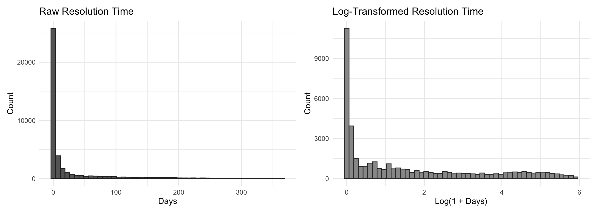
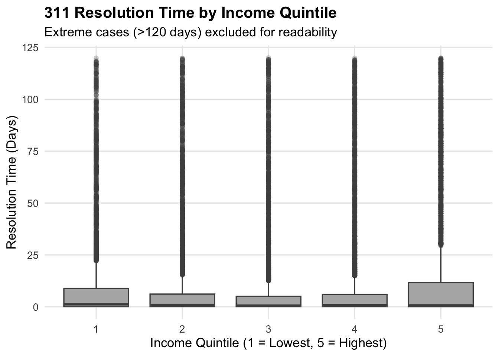
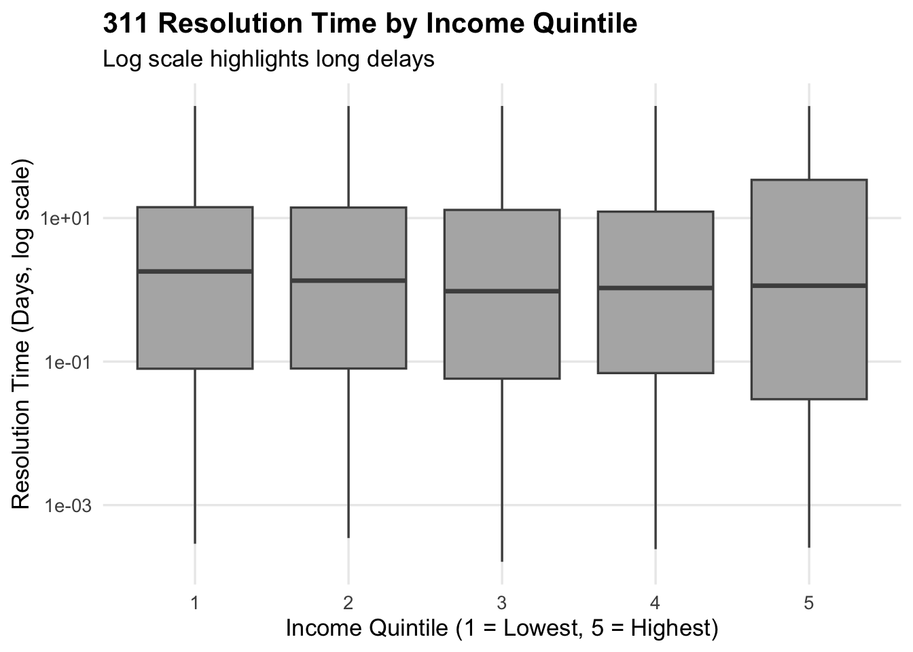
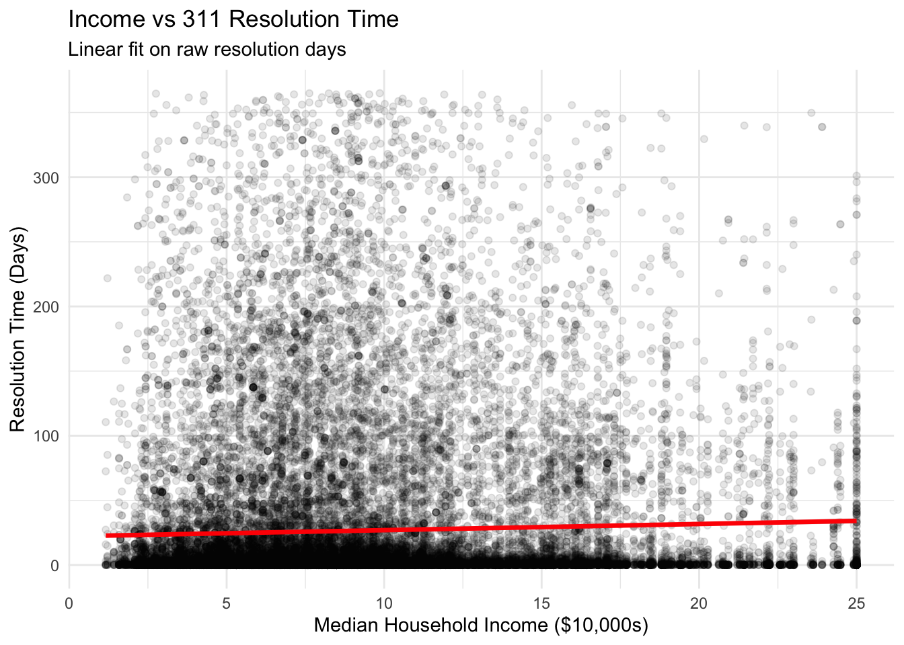
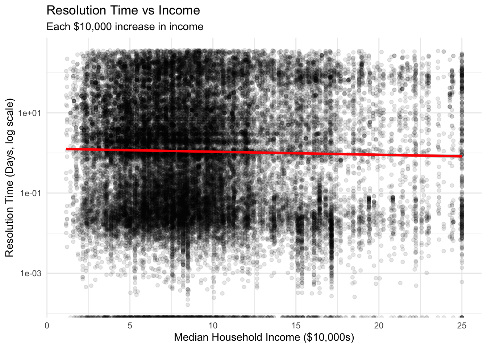
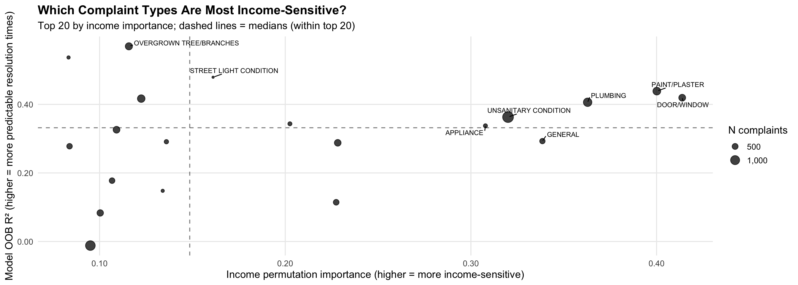
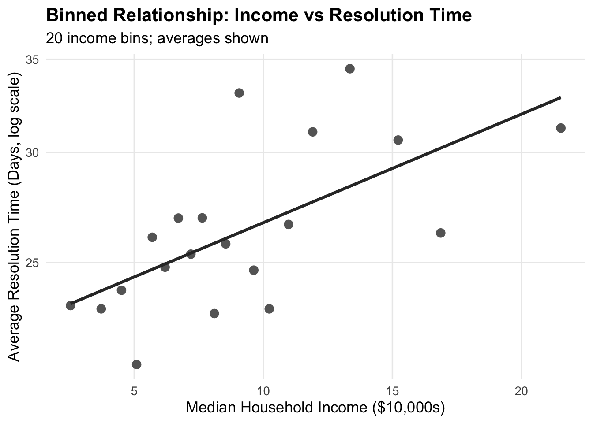
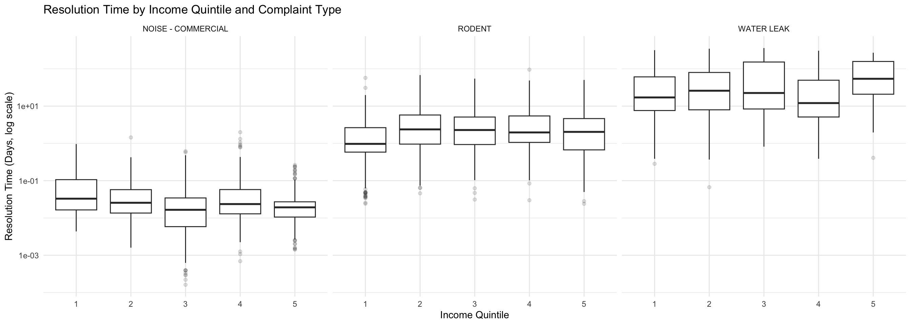

Individual Report - Breaking Lease: How We Met Your Landlord
Author
Emre Ozbalta
1. Project Motivation and Overarching Questions
Housing conditions and tenant–landlord interactions are a persistent source of friction in New York City, particularly in dense urban environments with aging housing stock and heterogeneous neighborhood resources. Publicly available administrative data, such as NYC 311 complaints, provide a unique lens through which to study these dynamics at scale. However, these data also raise important questions about equity, service provision, and the extent to which neighborhood socioeconomic conditions are associated with differences in service outcomes.
The overarching question motivating this project was whether housing-related complaints are resolved differently across neighborhoods, and specifically whether income is associated with complaint resolution outcomes once complaint characteristics are taken into account. Rather than focusing solely on complaint volume, the project emphasized resolution time as an outcome, reflecting not only the presence of housing issues but also the responsiveness of the system addressing them.
Within this broader framing, my individual contribution focused on the following questions:
How does the distribution of 311 resolution times vary across income groups?
Do income differences primarily affect typical cases, or are they driven by rare but extreme delays?
How does the role of income compare to other predictors such as complaint type, timing, and location?
Are income effects consistent across complaint categories, or do they vary meaningfully by service type?
Answering these questions required careful data construction, thoughtful modeling choices, and deliberate interpretation of results.
2. Data Sources and Integration Strategy
A substantial portion of my work centered on building a unified dataset from multiple administrative and survey sources. I used NYC Open Data to obtain 311 service requests, Department of Buildings (DOB) complaints, and Housing Preservation and Development (HPD) violations for calendar year 2023. To contextualize these records socioeconomically, I pulled tract-level demographic and housing characteristics from the American Community Survey (ACS) 5-year estimates.
Because these datasets were collected for different administrative purposes, they required extensive cleaning and harmonization. For 311 complaints, I parsed timestamp fields to compute resolution time in days as the difference between complaint creation and closure. I filtered implausible values (negative durations and extreme outliers exceeding one year) to ensure analytical validity.
Crucially, I spatially joined point-level 311 complaints to census tracts using latitude and longitude coordinates, enabling linkage to tract-level median household income. This spatial step transformed raw service records into a dataset capable of addressing neighborhood-level equity questions. I then constructed income quintiles to facilitate distributional comparisons that are both interpretable and robust to extreme values.
This data engineering process highlighted an important lesson: methodological rigor begins long before modeling, particularly when working with administrative data that lack a single, clean unit of analysis.
Code
# Load Required Libraries & Define ACS Variables# Load core libraries for ACS and data manipulationlibrary(tidycensus)library(tidyverse)library(sf)# Define ACS variables we will pull: income, rent burden, housing units, populationvars <-c(income ="B19013_001E",rent_burden ="B25070_001E",housing_units ="B25002_001E",population ="B01003_001E")# NYC’s five counties (boroughs)nyc_counties <-c("New York", "Kings", "Queens", "Bronx", "Richmond")# Pull ACS (American Community Survey) Data for All NYC Census Tractsacs_tracts_sf <-get_acs(geography ="tract",variables = vars,year =2023,survey ="acs5",state ="NY",county = nyc_counties,output ="wide",key ="8511c605b287c092b9895c821043632a80c83008",geometry =TRUE# <-- important) %>%st_transform(4326) # match lat/lon CRS
# Load libraries for scraping NYC Open Data via Socrata APIlibrary("RSocrata")library(janitor)library(lubridate)library(dplyr)# NYC Open Data application tokenapp_token <-"ExUt22WiPiJvXNo3ZwPuIUDuC"# Build the API URL to pull 311 complaints for all of 2023url_311 <-paste0("https://data.cityofnewyork.us/resource/erm2-nwe9.json?","$select=unique_key,created_date,closed_date,complaint_type,descriptor,","incident_address,incident_zip,borough,latitude,longitude","&$where=created_date >= '2023-01-01T00:00:00' ","AND created_date < '2024-01-01T00:00:00'","&$limit=50000")# Download 311 data, clean names, and create date-based variablesnyc311 <-read.socrata(url_311, app_token = app_token) %>%clean_names() %>%mutate(created_date =ymd_hms(created_date),closed_date =ymd_hms(closed_date),date =as_date(created_date),year =year(created_date),month =month(created_date),dow =wday(created_date, label =TRUE) )
Code
# Download & Clean DOB (Department of Buildings) Complaints (2023)# NYC Open Data application tokenapp_token <-"ExUt22WiPiJvXNo3ZwPuIUDuC"# DOB complaint dataset (CSV format from NYC Open Data)url_dob <-"https://data.cityofnewyork.us/resource/vztk-gaf7.csv?$limit=50000"dob_raw <-read.socrata(url_dob, app_token = app_token)# Clean DOB data: fix timestamps, parse dates, create addressdob_clean <- dob_raw %>%clean_names() %>%mutate(date_entered =mdy(date_entered),inspection_date =mdy(inspection_date),disposition_date =mdy(disposition_date),# Fix: dobrundate is stored as large integer representing Unix millisecondsdobrundate =as.POSIXct(dobrundate /1000,origin ="1970-01-01",tz ="UTC"),# Create additional time fields + a unified full address stringdate = date_entered,year =year(date_entered),month =month(date_entered),dow =wday(date_entered, label =TRUE),full_address =paste0(house_number, " ", house_street, ", NY ", zip_code) )# Filter DOB complaints to 2023 onlydob_complaints_2023 <- dob_clean %>%filter(!is.na(date), date >=as.Date("2023-01-01"), date <as.Date("2024-01-01") ) %>% dplyr::select( complaint_number, status, date_entered, inspection_date, disposition_date, full_address, complaint_category, year, month, dow )
Code
# ============================================================# Load packages for NYC Open Data (HPD, 311, DOB) and wrangling# - RSocrata: access NYC Open Data via API# - janitor: clean column names# - lubridate: handle dates/times# - dplyr: data manipulation# ============================================================library("RSocrata")library(janitor)library(lubridate)library(dplyr)# NYC Open Data app token (used by RSocrata API calls)app_token <-"ExUt22WiPiJvXNo3ZwPuIUDuC"# ============================================================# HPD Violations: Download & clean Housing Preservation & Development data# - Pull up to 100,000 rows of HPD violations# - Parse dates, build BBL, derive basic time fields (year, month, dow)# ============================================================url_hpd <-"https://data.cityofnewyork.us/resource/wvxf-dwi5.csv?$limit=100000"hpd_raw <-read.socrata(url_hpd, app_token = app_token)hpd_clean <- hpd_raw %>%clean_names() %>%mutate(# Parse all relevant date columnsnovissueddate =ymd(novissueddate),inspectiondate =ymd(inspectiondate),approveddate =ymd(approveddate),originalcertifybydate =ymd(originalcertifybydate),originalcorrectbydate =ymd(originalcorrectbydate),newcertifybydate =ymd(newcertifybydate),newcorrectbydate =ymd(newcorrectbydate),certifieddate =ymd(certifieddate),currentstatusdate =ymd(currentstatusdate),# Use NOV issued date as the main event datedate = novissueddate,year =year(date),month =month(date),dow =wday(date, label =TRUE),# Convert Boro/Block/Lot to integers (suppress parsing warnings)boroid =suppressWarnings(as.integer(boroid)),block =suppressWarnings(as.integer(block)),lot =suppressWarnings(as.integer(lot)),# Build BBL as a zero-padded string: [boro][block][lot]bbl =if_else(!is.na(boroid) &!is.na(block) &!is.na(lot),sprintf("%01d%05d%04d", boroid, block, lot),NA_character_ ) )# ============================================================# Filter HPD violations to 2023 & valid records# - Keep only class A/B/C violations with non-missing BBL and borough# ============================================================hpd_filtered <- hpd_clean %>%filter(!is.na(date), date >=as.Date("2023-01-01"), date <as.Date("2024-01-01"), class %in%c("A", "B", "C"),!is.na(bbl),!is.na(boro) )# ============================================================# Aggregate HPD violations by BBL + Class# - hpd_by_bbl_class: counts and dates per BBL–class combination# ============================================================hpd_by_bbl_class <- hpd_filtered %>%group_by(bbl, class) %>%summarize(n_violations =n(),first_date =min(date, na.rm =TRUE),last_date =max(date, na.rm =TRUE),n_buildings =n_distinct(buildingid),.groups ="drop" )# ============================================================# Aggregate HPD violations by BBL + Class + address# - Capture one canonical address per BBL–class# - Build full_address string for joining to 311/DOB# ============================================================hpd_by_bbl_class_addr <- hpd_filtered %>%arrange(date) %>%group_by(bbl, class) %>%summarize(boro =first(boro),housenumber =first(housenumber),streetname =first(streetname),zip =first(zip),novdescription =first(novdescription),n_violations =n(),first_date =min(date, na.rm =TRUE),last_date =max(date, na.rm =TRUE),.groups ="drop" ) %>%mutate(full_address =paste0(housenumber, " ", streetname, ", ", boro, " NY ", zip) )
Code
# ============================================================# Address-level joins: 311, DOB, HPD# - Goal: Build a unified address table with counts from all three sources# ============================================================library(dplyr)library(janitor)library(lubridate)# Construct full_address for 311 and aggregate by addressnyc3112 <- nyc311 %>%mutate(full_address =paste0(incident_address, ", NY ", incident_zip) )addr_311 <- nyc3112 %>%group_by(full_address) %>%summarize(n_311 =n(),n_311_heat =sum(complaint_type =="HEAT/HOT WATER", na.rm =TRUE),first_311 =min(date, na.rm =TRUE),last_311 =max(date, na.rm =TRUE),.groups ="drop" )# Aggregate DOB complaints by address (from dob_complaints_2023)addr_dob <- dob_complaints_2023 %>%group_by(full_address) %>%summarize(n_dob =n(),n_dob_open =sum(status !="CLOSED", na.rm =TRUE),median_res_dob =median(disposition_date - date_entered, na.rm =TRUE),.groups ="drop" )# Join 311 and DOB at the address leveladdr_311_dob <- addr_311 %>%left_join(addr_dob, by ="full_address")# Add HPD counts at the address leveladdr_311_dob_hpd <- addr_311_dob %>%left_join( hpd_by_bbl_class_addr %>%group_by(full_address) %>%summarize(n_hpd =n(),n_hpd_c =sum(class =="C", na.rm =TRUE),.groups ="drop" ),by ="full_address" )# ============================================================# Tract-level story: join point-based 311 data to census tracts# - Convert 311 complaints to sf points# - Spatially join to ACS tract polygons# - Aggregate up to tract level for SQ1–SQ4 & SQ6# ============================================================library(sf)library(dplyr)# Convert 311 complaints to point geometrynyc311_sf <- nyc311 %>%filter(!is.na(longitude), !is.na(latitude)) %>%st_as_sf(coords =c("longitude", "latitude"), crs =4326)# Spatial join: attach tract GEOID to each 311 complaintnyc311_with_tract <-st_join( nyc311_sf, acs_tracts_sf %>% dplyr::select(GEOID),join = st_within)# Aggregate 311 counts by census tracttract_311 <- nyc311_with_tract %>%st_drop_geometry() %>%group_by(GEOID) %>%summarize(n_311 =n(),n_311_heat =sum(complaint_type =="HEAT/HOT WATER", na.rm =TRUE),.groups ="drop" )# Merge ACS tract attributes with 311 tract-level countstract_311_acs <- acs_tracts_sf %>%left_join(tract_311, by ="GEOID")
3. Income Quintiles: Mean vs. Median Outcomes
To explore income-related patterns descriptively, I aggregated 311 complaints by census-tract income quintile and computed both mean and median resolution times. The resulting table reveals a striking divergence: median resolution times decline modestly with income, while mean resolution times increase in higher-income quintiles.
This pattern suggests that typical complaints are resolved somewhat faster in higher-income areas, but that these areas also experience rare but exceptionally long delays that inflate the mean. In contrast, lower-income areas exhibit longer typical resolution times but fewer extreme outliers.
This distinction is critical. If one were to focus solely on mean outcomes, one might conclude that higher-income neighborhoods experience worse service. If one were to focus only on medians, the opposite conclusion would emerge. The juxtaposition of these two statistics demonstrates that income differences are concentrated in the tail of the distribution, rather than in day-to-day service outcomes.
The accompanying boxplots, both with capped outliers and on the log scale, reinforce this interpretation visually. Log-scaled plots, in particular, make clear that differences across income groups are subtle for most complaints but become more pronounced among long delays.
library(gt)library(scales)sq2_311_summary %>% dplyr::select(-n) %>%# DROP number of complaints column dplyr::mutate(income_quintile =factor( income_quintile,levels =1:5,labels =c("Lowest", "Low–Mid", "Middle", "Upper–Mid", "Highest") ) ) %>%gt() %>%tab_header(title ="311 Resolution Time by Income Quintile",subtitle ="Mean vs Median Resolution Days" ) %>%fmt_number(columns =c(mean_res, median_res),decimals =2 ) %>%data_color(columns =c(mean_res, median_res),colors =col_numeric(palette =c("#f2f2f2", "#595959"),domain =NULL ) ) %>%cols_label(income_quintile ="Income Quintile",mean_res ="Mean Resolution (Days)",median_res ="Median Resolution (Days)" ) %>%opt_table_outline() %>%opt_all_caps() %>% gt::tab_source_note(source_note ="NYC 311 complaints aggregated by census-tract income quintiles" )
311 Resolution Time by Income Quintile
Mean vs Median Resolution Days
Income Quintile
Mean Resolution (Days)
Median Resolution (Days)
Lowest
22.85
1.64
Low–Mid
25.81
1.17
Middle
27.20
0.87
Upper–Mid
26.37
0.97
Highest
30.64
1.02
NYC 311 complaints aggregated by census-tract income quintiles
4. Distributional Properties of Resolution Time
Before estimating any formal models, I examined the raw distribution of 311 resolution times. As shown in the paired histograms of raw and log-transformed resolution days, the outcome variable is extremely right-skewed. Most complaints are resolved quickly, but a nontrivial minority persist for months, creating a long tail.
This distributional structure has two important implications. First, summary statistics such as the mean are highly sensitive to extreme values. Second, modeling resolution time on the raw scale risks allowing a small number of extreme observations to dominate inference. These considerations motivated the parallel use of log-transformed outcomes, which compress the right tail while preserving relative differences between shorter and longer delays.
Importantly, I did not treat the log transformation as a purely technical fix. Instead, I explicitly compared results on the raw and log scales to understand how interpretation changes depending on whether the focus is on absolute delays or proportional differences in resolution time.
Code
library(patchwork)res_rf_data <- nyc311_with_tract %>%select( resolution_days_311, income, complaint_type, borough, month, dow ) %>%mutate(complaint_type =factor(complaint_type),borough =factor(borough),dow =factor(dow) ) %>%na.omit()p_raw <-ggplot(res_rf_data, aes(x = resolution_days_311)) +geom_histogram(bins =50, fill ="grey40", color ="grey15") +labs(title ="Raw Resolution Time", x ="Days", y ="Count") +theme_minimal(base_size =14)p_log <-ggplot(res_rf_data, aes(x =log1p(resolution_days_311))) +geom_histogram(bins =50, fill ="grey60", color ="grey20") +labs(title ="Log-Transformed Resolution Time", x ="Log(1 + Days)", y ="Count") +theme_minimal(base_size =14)patchwork::wrap_plots(p_raw, p_log, ncol =2)

Code
ggplot( nyc311_with_tract %>%filter(resolution_days_311 <=120), # cap extreme outliersaes(x =factor(income_quintile),y = resolution_days_311)) +geom_boxplot(fill ="grey70",color ="grey30",outlier.alpha =0.2 ) +labs(title ="311 Resolution Time by Income Quintile",subtitle ="Extreme cases (>120 days) excluded for readability",x ="Income Quintile (1 = Lowest, 5 = Highest)",y ="Resolution Time (Days)" ) +theme_minimal(base_size =13) +theme(panel.grid.minor =element_blank(),plot.title =element_text(face ="bold") )

Code
ggplot(nyc311_with_tract,aes(x =factor(income_quintile),y = resolution_days_311)) +geom_boxplot(fill ="grey70",color ="grey30",outlier.alpha =0.2 ) +scale_y_log10() +labs(title ="311 Resolution Time by Income Quintile",subtitle ="Log scale highlights long delays",x ="Income Quintile (1 = Lowest, 5 = Highest)",y ="Resolution Time (Days, log scale)" ) +theme_minimal(base_size =13) +theme(panel.grid.minor =element_blank(),plot.title =element_text(face ="bold") )

Code
sq2_lm_data <- nyc311_with_tract %>%mutate(income_10k = income /10000)ggplot(sq2_lm_data,aes(x = income_10k, y = resolution_days_311)) +geom_point(alpha =0.1) +geom_smooth(method ="lm", color ="red", linewidth =1.2) +labs(title ="Income vs 311 Resolution Time",subtitle ="Linear fit on raw resolution days",x ="Median Household Income ($10,000s)",y ="Resolution Time (Days)" ) +theme_minimal()

Code
ggplot(sq2_lm_data,aes(x = income_10k, y = resolution_days_311)) +geom_point(alpha =0.1) +geom_smooth(method ="lm", color ="red", linewidth =1.2) +scale_y_log10() +labs(title ="Resolution Time vs Income",subtitle ="Each $10,000 increase in income",x ="Median Household Income ($10,000s)",y ="Resolution Time (Days, log scale)" ) +theme_minimal()

Regression Analysis: Baseline Income Effects
Building on these descriptive findings, I estimated a baseline linear regression relating log-transformed resolution time to median household income (scaled in $10,000 increments). The estimated income coefficient was positive and statistically significant, indicating that higher income is associated with longer resolution times on the log scale.
However, the model’s explanatory power was extremely limited, with an R² near zero. This result is informative in itself. It demonstrates that while income may have a statistically detectable association with resolution time, income alone explains very little of the overall variation in outcomes.
This finding reinforces a key theme of the project: neighborhood income is not the primary driver of resolution outcomes. Instead, it interacts with other factors—particularly complaint type—in ways that are not captured by a single linear term.
Code
sq2_lm_data <- nyc311_with_tract %>%mutate(income_10k = income /10000)lm_income_only <-lm(log_res ~ income_10k, data = sq2_lm_data)summary(lm_income_only)
Call:
lm(formula = log_res ~ income_10k, data = sq2_lm_data)
Residuals:
Min 1Q Median 3Q Max
-1.6869 -1.4752 -0.7982 1.1945 4.4225
Coefficients:
Estimate Std. Error t value Pr(>|t|)
(Intercept) 1.453315 0.019480 74.605 < 2e-16 ***
income_10k 0.009342 0.001884 4.958 7.16e-07 ***
---
Signif. codes: 0 '***' 0.001 '**' 0.01 '*' 0.05 '.' 0.1 ' ' 1
Residual standard error: 1.77 on 40868 degrees of freedom
Multiple R-squared: 0.0006011, Adjusted R-squared: 0.0005766
F-statistic: 24.58 on 1 and 40868 DF, p-value: 7.155e-07
6. Random Forest Models and Predictor Importance
To move beyond linear assumptions and capture nonlinearities and interactions, I implemented random forest models using the ranger package. I estimated parallel models using raw resolution days and log-transformed resolution time as outcomes.
The contrast between these models is instructive. The random forest trained on raw days achieved moderate predictive performance, while the model trained on log-transformed outcomes exhibited substantially higher out-of-bag R². This improvement reflects the reduced influence of extreme outliers and confirms that transformation choices can materially affect model performance.
Permutation importance measures from both models consistently ranked complaint type as the most important predictor, far exceeding income, borough, or temporal variables. Income was important, but clearly secondary. This result provides strong evidence that what the complaint is about matters far more than where it occurs, at least in terms of predicting resolution time.
At the same time, income’s non-negligible importance suggests that neighborhood context still plays a role—just not a dominant one.
compare_tbl <- tibble::tribble(~Metric, ~`RF on Raw Days`, ~`RF on Log(Days)`,"Target variable", "resolution_days_311", "log_res","R²", sprintf("%.2f", res_rf_sq2$r.squared), sprintf("%.2f", rf_sq2$r.squared),"Outlier sensitivity", "High", "Reduced","Model fit", "Moderate", "Strong","Interpretation", "Absolute days", "Relative / proportional")library(gt)compare_tbl %>%gt() %>%tab_header(title ="Random Forest Model Comparison") %>%cols_label(Metric ="Metric",`RF on Raw Days`="Raw Resolution Days",`RF on Log(Days)`="Log(Resolution Days)" )
Random Forest Model Comparison
Metric
Raw Resolution Days
Log(Resolution Days)
Target variable
resolution_days_311
log_res
R²
0.68
0.83
Outlier sensitivity
High
Reduced
Model fit
Moderate
Strong
Interpretation
Absolute days
Relative / proportional
7. Income Effects Across Complaint Types
To further unpack this heterogeneity, I estimated complaint-type-specific random forest models and examined income’s permutation importance alongside predictive performance. The resulting scatter plot of income importance versus out-of-bag R² reveals substantial variation across complaint categories.
Some complaint types, such as plumbing-related issues and door/window complaints, show relatively high income importance and reasonably predictable resolution times. Others, including certain environmental or sanitation complaints, exhibit low income sensitivity and weak predictability overall.
This analysis demonstrates that income effects are not uniform. In some service domains, neighborhood socioeconomic context appears to meaningfully shape resolution dynamics. In others, resolution time is largely driven by factors unrelated to income, such as operational constraints or the inherent complexity of the issue.
Importantly, these findings caution against broad generalizations. Any policy intervention premised on income-based disparities must be complaint-type specific to be effective.
importance_by_type_pretty <- rf2_data %>%count(complaint_type, name ="n") %>%right_join(importance_by_type, by ="complaint_type") %>%arrange(desc(income_importance))
Code
library(dplyr)library(ggplot2)library(ggrepel)library(stringr)library(scales)plot_df <- importance_by_type_pretty %>%mutate(complaint_type =str_to_upper(complaint_type)) %>%arrange(desc(income_importance)) %>%slice_head(n =20) # SHOW ONLY TOP 20 BY INCOME IMPORTANCE# label the “best” 8 in the top-right sense (importance + predictability)label_df <- plot_df %>%mutate(score = income_importance + r_squared) %>%slice_max(score, n =8)ggplot(plot_df, aes(x = income_importance, y = r_squared, size = n)) +geom_point(alpha =0.75) +# reference lines (medians within the shown top-20 subset)geom_vline(xintercept =median(plot_df$income_importance, na.rm =TRUE),linetype ="dashed",alpha =0.5 ) +geom_hline(yintercept =median(plot_df$r_squared, na.rm =TRUE),linetype ="dashed",alpha =0.5 ) + ggrepel::geom_text_repel(data = label_df,aes(label = complaint_type),size =3,min.segment.length =0,box.padding =0.35,point.padding =0.25,max.overlaps =Inf ) +scale_x_continuous(labels =number_format(accuracy =0.01)) +scale_y_continuous(labels =number_format(accuracy =0.01)) +scale_size_continuous(breaks =pretty_breaks(n =4),labels = comma ) +labs(title ="Which Complaint Types Are Most Income-Sensitive?",subtitle ="Top 20 by income importance; dashed lines = medians (within top 20)",x ="Income permutation importance (higher = more income-sensitive)",y ="Model OOB R² (higher = more predictable resolution times)",size ="N complaints" ) +theme_minimal(base_size =13) +theme(plot.title =element_text(face ="bold"),panel.grid.minor =element_blank(),legend.position ="right" )

8. Binned Relationships and Visual Diagnostics
To complement model-based results, I constructed binned plots of income versus average resolution time. By averaging outcomes within income bins, these plots reduce noise and clarify overall trends without imposing strong functional form assumptions.
On the log scale, the binned relationship exhibits a gentle upward slope, consistent with regression results. However, the dispersion around this trend underscores that income explains only a small portion of variation. The binned visualization thus serves as a diagnostic tool, illustrating both the existence and the limits of income-related patterns.
Similarly, faceted boxplots by complaint type reveal stark differences in scale and variability across service categories. For example, commercial noise complaints are resolved relatively quickly across all income groups, while water leak complaints exhibit much longer resolution times and greater dispersion. These differences dwarf income-related variation within most categories.
Code
binned_sq2 <- sq2_lm_data %>%mutate(income_bin =ntile(income_10k, 20)) %>%group_by(income_bin) %>%summarise(income_mean =mean(income_10k),res_mean =mean(resolution_days_311) )ggplot(binned_sq2,aes(x = income_mean, y = res_mean)) +geom_point(size =3,color ="grey40" ) +geom_smooth(method ="lm",se =FALSE,color ="grey20",linewidth =1.2 ) +scale_y_log10() +labs(title ="Binned Relationship: Income vs Resolution Time",subtitle ="20 income bins; averages shown",x ="Median Household Income ($10,000s)",y ="Average Resolution Time (Days, log scale)" ) +theme_minimal(base_size =13) +theme(panel.grid.minor =element_blank(),plot.title =element_text(face ="bold") )

Code
nyc311_with_tract <- nyc311_with_tract %>%mutate(complaint_type =str_to_upper(complaint_type) # ALL CAPS) ggplot( nyc311_with_tract %>%# TOP 10 ONLYfilter(complaint_type %in%c("WATER LEAK", "RODENT", "NOISE - COMMERCIAL" )),aes(x =factor(income_quintile), y = resolution_days_311)) +geom_boxplot(outlier.alpha =0.15) +scale_y_log10() +facet_wrap(~ complaint_type) +labs(title ="Resolution Time by Income Quintile and Complaint Type",x ="Income Quintile",y ="Resolution Time (Days, log scale)" ) +theme_minimal()

9. Limitations and Methodological Considerations
Several limitations qualify the interpretation of these results. First, resolution time is an imperfect proxy for service quality. Long delays may reflect case complexity, tenant availability, or administrative backlogs rather than neglect. Second, the analysis is observational and descriptive; it does not establish causal relationships between income and resolution outcomes.
Additionally, while spatial clustering was present, the project did not implement formal spatial regression models. Such models could help disentangle neighborhood spillovers and improve inference. Finally, machine-learning models, while powerful, pose communication challenges, particularly when translating permutation importance into actionable insights for non-technical audiences.
Recognizing these limitations is essential for responsible interpretation.
10. Reflection and Learning Outcomes
This project reinforced several core lessons from STA 9750. First, distributional thinking matters: conclusions depend critically on whether one examines means, medians, or tails. Second, model choice shapes insight. Simple regressions and flexible machine-learning models answer different questions, and neither is sufficient alone. Third, effective data science requires constant negotiation between statistical rigor and interpretability.
From a technical perspective, I strengthened my skills in spatial data integration, outcome transformation, ensemble modeling, and diagnostic visualization. More broadly, the project deepened my appreciation for how administrative data can illuminate—but also obscure—questions of equity and service provision.
Overall, this work represents a meaningful step forward in my ability to conduct applied, policy-relevant data analysis with both technical care and interpretive humility.